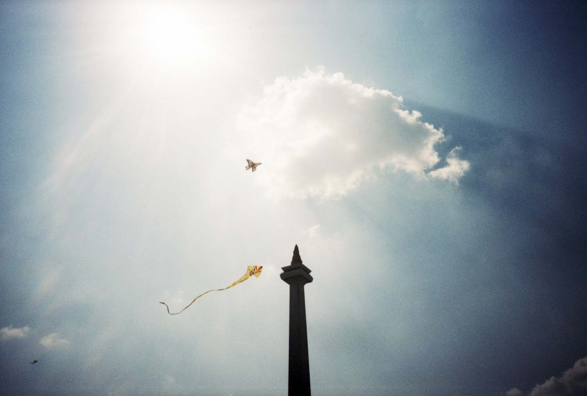

Friday, February 1, 2013. Rekomendasi sharing hari ini adalah:

Hello
Evan
!
Share Now, Bro.
Berita-mu,
Sesuatu yang bikin hidup Wall-kamu.
Berbagi keceriaan dengan temanmu
(Proud to be First Indonesian News Sharing Company)
10 Topik Terkini
Paling sering dibicarakan
di Indonesia, saat ini.
Klik Berita berdasar Hashtag
#1
*MenujuJabarSatu*
#2
*AhokMarah*
#3
*BarcaMilan0-2*
#4
*PenembakanPapua*
#5
*AcengFikri*
#6
*KuasaHukumRaffi*
#7
*FotoMesraRaffiWanda*
#8
*AherOptimis*
#9
*AnasUrban*
#10
*JokowiGanjilGenap*
Publik Figur
Paling sering dibicarakan
di Indonesia,di minggu ini.
#1 Raffi Ahmad
#2 Joko Widodo
#3 Aceng Fikri
#4 Anas Urbaningrum
#5 SBY